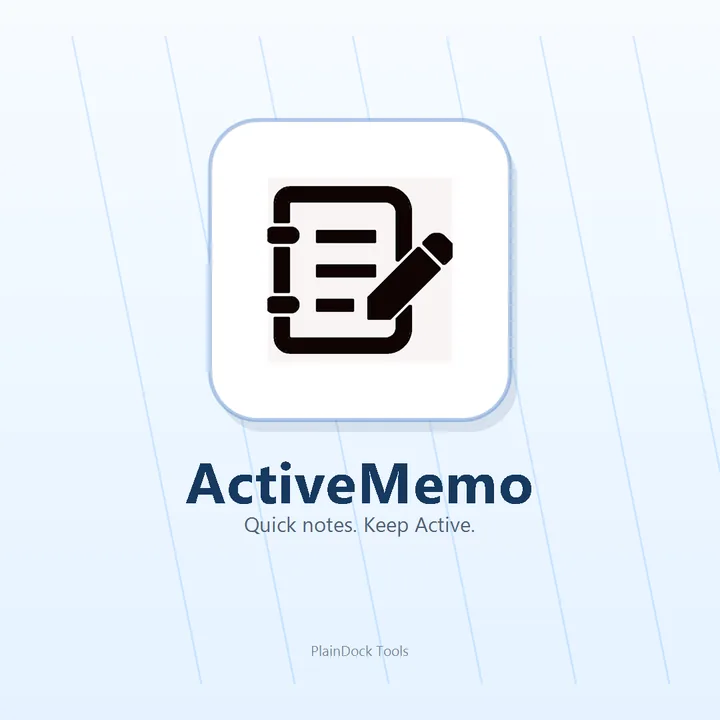
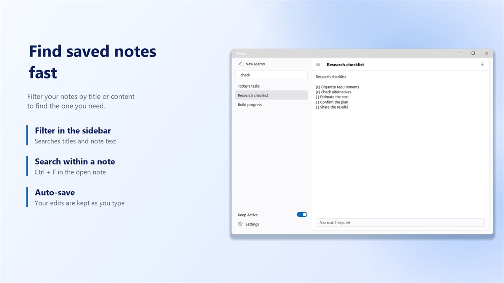
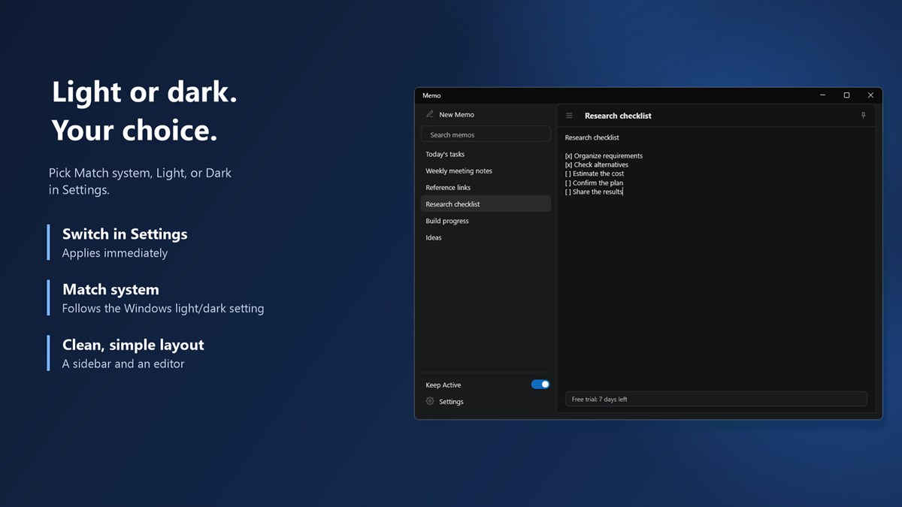
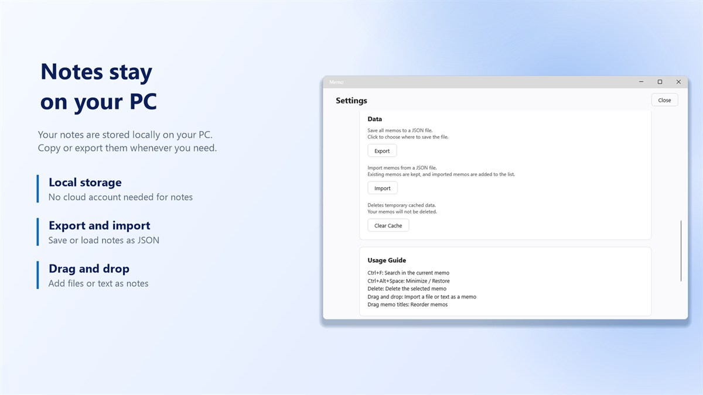
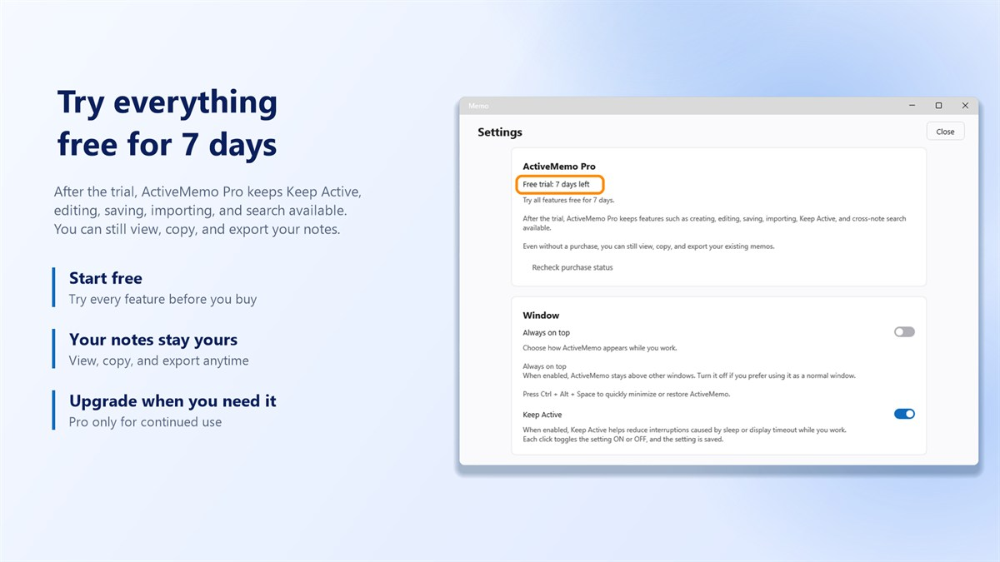

Keep Active
Keep your PC active and reduce interruptions caused by sleep or display timeout. It keeps going while the app is minimized, and you can turn it on or off at any time with the switch at the bottom left.

Redesigned in 3.0
ActiveMemo combines Keep Active, which keeps your PC active while idle, with a note list, editor, and search in one compact Windows app. Version 3.0 brings a clean window with your notes in a sidebar and an editor beside them, plus light and dark themes.
Keep your PC active and reduce interruptions caused by sleep or display timeout. It keeps going while the app is minimized, and you can turn it on or off at any time with the switch at the bottom left.
Capture checklists, reference links, and progress notes with auto-save. Pin notes, reorder them by dragging, and drag and drop files or text to add notes.
Filter notes by title or content, and press Ctrl + F to search within the open note. Choose Match system, Light, or Dark.
Real screens from the app (with sample notes).

Keep your PC active while idle and capture work notes right away. In the developer's setup, Teams stayed green for several hours without mouse or keyboard input.

Keep Active continues while the app is minimized. It starts on when you launch the app, and Ctrl + Alt + Space minimizes or restores the window.

Filter notes by title or content in the sidebar. Press Ctrl + F to search within the open note. Your edits are saved automatically.

Choose Match system, Light, or Dark. Switch the display language between English and Japanese. The window position and size are restored the next time you open the app.

Your notes are stored locally on your PC, and no cloud account is required for notes. Export or import them as JSON files.
Before you start
Local-first notes
Note content is never sent to the developer's servers. Copy text or export your notes whenever you need to. The app-specific privacy policy explains what is stored.
Trial and Pro
Every feature is available for 7 days from the first launch. See how Keep Active works in your setup and how the notes feel before you decide.
If you use it every day, ActiveMemo Pro keeps Keep Active, creating, editing and saving notes, importing, and note search available. Without Pro, you can still view, copy, and export your existing notes.
Pick the page that matches what you are looking for.

Install ActiveMemo from Microsoft Store to start your 7-day free trial.
Try free for 7 days (Microsoft Store)